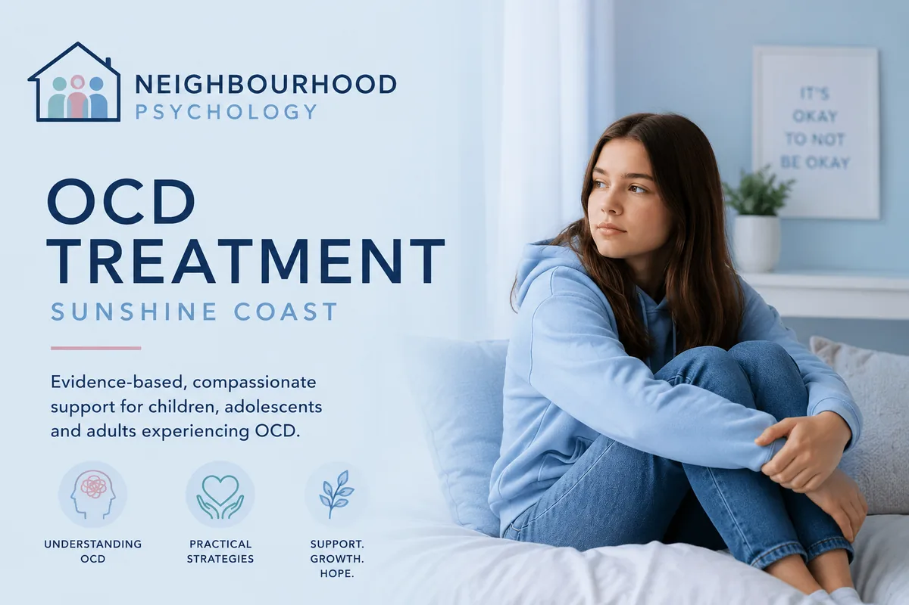

Evidence-based support for children, adolescents and adults experiencing OCD. Specialised CBT and ERP in a compassionate, non-judgemental environment.

At Neighbourhood Psychology, we provide evidence-based support for children, adolescents and adults experiencing obsessive thoughts, compulsive behaviours and anxiety related to Obsessive-Compulsive Disorder (OCD). Our approach is compassionate, respectful and tailored to each individual's needs.
Who this helps: Children, adolescents and adults experiencing intrusive thoughts, compulsive rituals, or OCD-related anxiety. Treatment is based on Exposure and Response Prevention (ERP) — the most evidence-supported approach for OCD. Available in-person in Maroochydore and via Telehealth. Medicare rebates available with a Mental Health Care Plan.
Obsessive-Compulsive Disorder (OCD) involves persistent intrusive thoughts, worries or urges (obsessions) and repetitive behaviours or mental rituals (compulsions) that are often used to reduce anxiety or distress.
OCD presents differently for every individual. Some people may experience fears related to contamination, harm, mistakes or uncertainty, while others may experience repetitive checking, reassurance-seeking, counting, mental rituals or avoidance behaviours. With appropriate support, individuals can learn effective strategies to manage OCD symptoms and reduce their impact on everyday life.
Children and adolescents may not always be able to clearly explain their thoughts or worries, and symptoms can sometimes appear as anxiety, irritability or behavioural difficulties.
We use evidence-based approaches tailored to the individual's age, needs and experiences:
Many individuals experiencing OCD feel embarrassed, overwhelmed or misunderstood. We aim to create a safe, respectful and non-judgemental environment where clients feel supported throughout the therapeutic process. Our focus is not simply symptom reduction, but helping individuals build confidence, resilience and improved quality of life.
Yes. OCD can occur in children, adolescents and adults. Symptoms may present differently depending on age and developmental stage. Children may not be able to fully articulate their obsessions, and the condition can be mistaken for general anxiety or behavioural issues.
Yes. Many individuals benefit significantly from evidence-based psychological treatment — particularly Exposure and Response Prevention (ERP). Most people see meaningful improvement with the right support.
Exposure and Response Prevention (ERP) involves gradually and collaboratively approaching feared situations or thoughts, while resisting the urge to perform compulsions. It is done at a pace that feels manageable, with full support throughout. It can feel challenging at first, but the process is carefully paced and highly effective.
No referral is required to book an appointment. If you wish to access Medicare rebates with a Mental Health Care Plan, a GP referral is needed.
With the right approach, most people see real and lasting improvement. We're here to help — no judgement, no pressure.